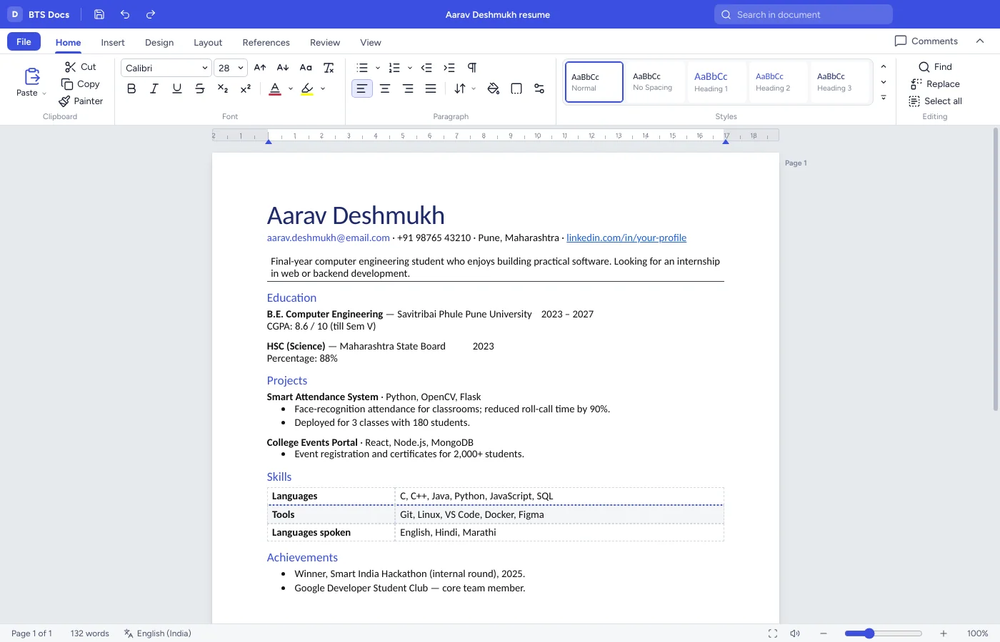

D
BTS Docs
Essays, notes, letters, reports and resumes on real A4 pages.
- Styles, 14 style sets, tables, pictures, captions and page breaks
- Track changes, comments, citations and bibliography in APA, MLA or IEEE
- Hindi and Marathi phonetic typing, Kruti Dev and Shivaji to Unicode, offline voice typing
- SmartArt diagrams, mail merge, table of contents, citation lookup by DOI or ISBN
- Opens .docx, .odt, .txt and .md; saves .docx, .odt, PDF and more
